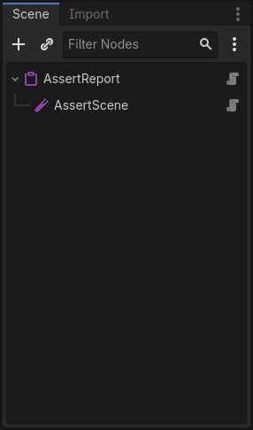
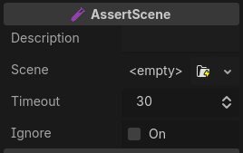
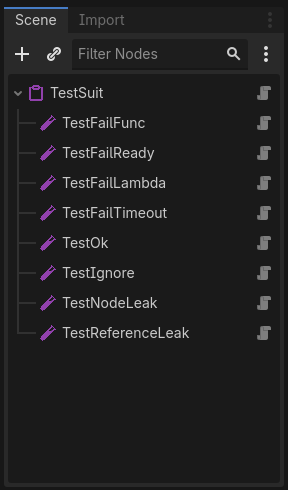

Getting started¶
Creating a test¶
- Create a scene to be tested
- Add as many
assert()you wanto to validate if everything is working right - End the scene with
get_tree().quit()
Note
Notice how we didn't use any feature from the addon to create the test.
- Our scene doesn't have a
Nodefrom the addon - Our files doesn't need prefix/suffix
test - Our methods doesn't need prefix/suffix
test - Our script doesn't have to
extendan addon script - Our script doesn't call method from the addon
The test is just a scene that close itself!
Running a test¶
The first step is to create a scene which will be responsible for running your test scenes:

Info
AssertReportinitiate the children tests and print their resultsAssertScenerun the test scene in a new process
Access your AssertScene properties and put your test scene in the scene property.

Save this scene and execute it to start the tests! Your output should be something like:
It's basically the result of your test scene and the stderr messages.
Running multiple tests¶
To run multiple tests, just add more AssertScene to your scene and name it however you want. Example:
